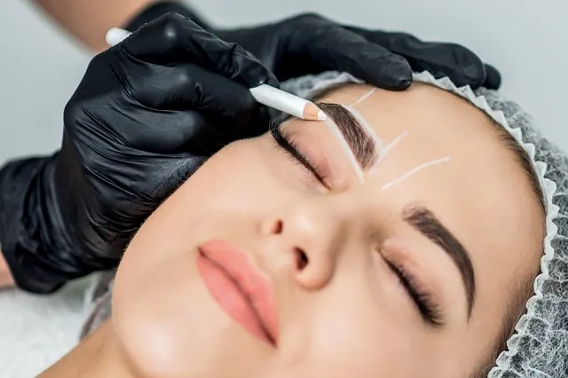
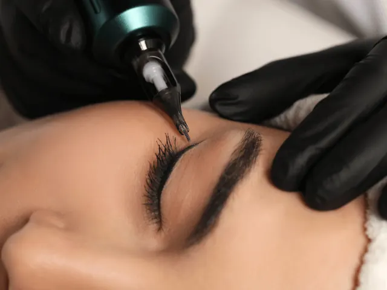

Partnerbijdrage
Hoe kan permanente make-up ervoor zorgen dat je zelfverzekerder wordt?
Gepubliceerd op 12 juni 2023, bijgewerkt op 26 februari 2024
Onderdeel van de gids Permanente make-up in Nijmegen

Ben je op zoek naar een manier om je zelfbeeld en zelfvertrouwen te verbeteren? Overweeg dan permanente make-up! Permanente make-up kan niet alleen je uiterlijk verbeteren, maar ook je innerlijke zelfvertrouwen een boost geven. In deze blog gaan we dieper in op hoe permanente make-up je kan helpen om je zelfbeeld te vergroten en je meer zelfverzekerd te laten voelen.
Wat is permanente make-up?
Permanente make-up, ook wel bekend als micropigmentnatie, is een techniek waarbij pigment onder de huid wordt aangebracht om de wenkbrauwen, oogleden, lippen en andere delen van het gezicht te accentueren en te verbeteren. Het is een duurzame cosmetische behandeling die kan helpen bij het vergroten van je zelfbeeld en zelfvertrouwen.
Hoe zorgt permanente make-up voor een groter zelfbeeld?
Voor sommige mensen kan permanente make-up een manier zijn om hun zelfbeeld en zelfvertrouwen te vergroten. Bijvoorbeeld, mensen met littekens of alopecia kunnen zich onzeker voelen over hun uiterlijk. Permanente make-up kan helpen om de verschijning van littekens en kale plekken te verminderen, waardoor de persoon zich zelfverzekerder en positiever over zichzelf voelt.
Bovendien kan permanente make-up ook helpen bij het verbeteren van asymmetrische gezichtskenmerken. Mensen met ongelijke wenkbrauwen of lippen kunnen zich hierdoor onzeker voelen. Met permanente make-up kan de symmetrie worden verbeterd en kan de persoon zich weer zelfverzekerd voelen.

Wat zijn de voordelen van permanente make-up?
Een groot voordeel van permanente make-up is dat je tijd bespaart bij je dagelijkse make-up routine. Je hoeft nooit meer je eyeliner of wenkbrauwen bij te tekenen. Dit kan niet alleen tijd, maar ook stress, besparen en ervoor zorgen dat je er altijd verzorgd uitziet.
Daarnaast is permanente make-up een goede oplossing voor mensen met dunne of onvolledige wenkbrauwen of wimpers. Door micropigmentatie kunnen vollere wimpers en wenkbrauwen gecreëerd worden, waardoor het gezicht er voller en jonger uitziet.
Waar ga je naartoe voor permanente make-up?
Als je op zoek bent naar een goede plek voor permanente make-up, is het belangrijk om onderzoek te doen en ervoor te zorgen dat je naar een professionele en ervaren specialist gaat. Hier zijn een paar tips om je te helpen bij het vinden van de juiste plek:
- Zoek naar gecertificeerde specialisten: Zoek naar specialisten die gecertificeerd zijn door een gerenommeerde instantie, zoals de NSGP (Nederlandse Stichting voor Geregistreerde PMU-Specialisten). Deze certificering zorgt ervoor dat de specialist voldoet aan bepaalde eisen op het gebied van veiligheid en hygiëne.
- Bekijk portfolio’s: Kijk naar het portfolio van de specialist om een idee te krijgen van hun werk. Bekijk voor- en na-foto’s om te zien of hun stijl en esthetiek bij jou past.
- Vraag om aanbevelingen: Vraag vrienden en familie om aanbevelingen voor specialisten die zij vertrouwen en waar ze goede ervaringen mee hebben gehad.
- Lees reviews: Lees online reviews van de specialist om te zien wat andere klanten te zeggen hebben over hun ervaring. Let op reviews die spreken over hygiëne, kwaliteit van de behandeling en klantenservice.
Maak een afspraak voor een consult: Maak een afspraak voor een consult om de specialist te ontmoeten en meer te weten te komen over hun werkwijze en de behandeling. Stel vragen en let op hoe zij reageren op jouw zorgen en wensen.

Wat zijn de risico’s van permanente make-up?
Hoewel permanente make-up over het algemeen veilig is, zijn er toch enkele risico’s verbonden aan de procedure. Infectie, allergische reacties, littekens of verkleuring zijn een paar van deze mogelijkheden. Om de kans op deze risico’s te minimaliseren is het belangrijk om een gecertificeerde specialist te kiezen die hygiëneprotocollen volgt en juiste technieken gebruikt. Het is ook essentieel om alle nazorginstructies op te volgen en je huid goed te beschermen tegen de zon.
Houd er rekening mee dat permanente make-up semipermanent is en na verloop van tijd kan vervagen, waardoor touch-up behandelingen nodig kunnen zijn. Het is daarom essentieel om alle risico’s voordat je besluit om permanente make-up aan te schaffen goed te begrijpen en een specialist uit te zoeken die je kan adviseren tijdens de procedure én nazorg.
Permanente Make-up bedrijven in Nijmegen
In Nijmegen zitten enkele bedrijven die gespecialiseerd zijn in permanente make-up.
PMU Studio Zuiver
PMU Studio Zuiver, gevestigd in het hart van Nijmegen, is een toonaangevende specialist in permanente make-up die toegewijd is aan het versterken van natuurlijke schoonheid. Met een fijne balans tussen kunst en precisie, brengt het ervaren team van PMU Studio Zuiver zorgvuldig aangebrachte permanente make-up aan, die is afgestemd op de unieke kenmerken en wensen van elke klant. Of het nu gaat om wenkbrauwen, eyeliner of lippen, de behandelingen van PMU Studio Zuiver zijn ontworpen om je dagelijkse schoonheidsroutine te vereenvoudigen en je zelfvertrouwen te verhogen. Geniet van een professionele en persoonlijke benadering in een ontspannen sfeer bij PMU Studio Zuiver.
INKontour Permanente Make-Up
INKontour Permanente Make-Up is een hoogwaardige studio die zich specialiseert in het verfijnd aanbrengen van permanente make-up om jouw natuurlijke schoonheid te accentueren. Met een passie voor perfectie en een toewijding aan klanttevredenheid, biedt INKontour behandelingen die zijn aangepast aan jouw unieke uitstraling en stijl. Ervaar de transformatieve kracht van deskundig aangebrachte permanente make-up in een professionele en gastvrije omgeving bij INKontour.
Studio Taskani | Private cosmetic tattoo studio
Studio Taskani is een exclusieve private cosmetic tattoo studio waar elegantie en precisie samenkomen om adembenemende permanente make-up kunstwerken te creëren. In de serene omgeving van Studio Taskani, wordt elke cliënt behandeld met de uiterste zorg en aandacht, waarbij de focus ligt op het creëren van verfijnde resultaten die de unieke schoonheid van het individu complimenteren. Van subtiele wenkbrauwtechnieken tot verbluffende lip pigmentatie, Studio Taskani staat voor kwaliteit en exclusiviteit in de wereld van cosmetische tatoeages.
IMPRESSS
IMPRESSS is een dynamische permanente make-up studio die bekend staat om haar uitzonderlijke vaardigheid in het verfraaien en benadrukken van natuurlijke gelaatstrekken. Met een scherp oog voor detail en een passie voor schoonheid, biedt IMPRESSS op maat gemaakte behandelingen die zowel verfijnd als duurzaam zijn. Of je nu op zoek bent naar meer definitie in je wenkbrauwen of een blijvende perfecte eyeliner, IMPRESSS combineert techniek en artistiek talent om jou een onberispelijke uitstraling te geven.
Conclusie
Al met al kan permanente make-up een goede optie zijn voor mensen die hun uiterlijk willen verbeteren en zich zelfverzekerder willen voelen. Maar net als bij elke cosmetische procedure zijn er risico’s aan verbonden en is het belangrijk om de juiste specialist te vinden en de nazorginstructies op te volgen om deze risico’s te minimaliseren. Door een ervaren en gecertificeerde specialist te kiezen en de nazorginstructies zorgvuldig op te volgen, kun je ervoor zorgen dat je permanente make-up veilig en succesvol is en je zelfvertrouwen een boost geeft.
OVERZICHT PERMANENTE MAKE-UP BEDRIJVEN
BEKIJKPermanente make-up in Nijmegen
Zin om te beginnen? In onze bedrijvengids vind je alle 3 studio's in Nijmegen, met openingstijden, kenmerken en een kaart.
Bekijk alle 3 studio's in Nijmegen
Heb je zelf een studio? Laat je hier uitlichten.